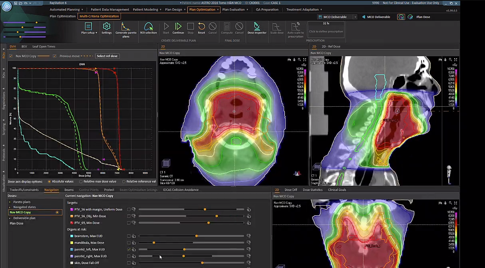
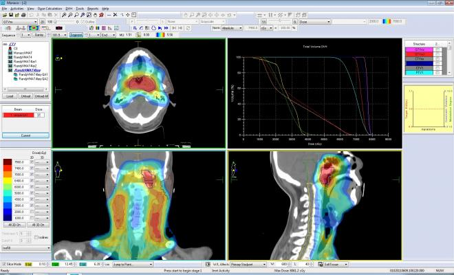

Pour ce 2ème stage j'ai été à l'agence
BWA à Dijon
Mon but était de réaliser un module sur Wordpress permettant de créer facilement et rapidement des pages d’un site d’une certaine région, département ou commune,
pour avoir un meilleur référencement sur le web.
J’ai également du refaire la page d’accueil d’un site client, ainsi que son header et footer, avec l’aide de l’outils Elementor sur Wordpress.
Les différentes semaines
(4-9 juin)
Les tâches effectuées :
Découverte de l'établissement, les différentes machines (accélérateurs à particules), présentation de
l'équipe de physiciens, et découverte des différents logiciels qu'ils utilisent (et du logiciel que je
vais devoir automatiser)
Début de la programmation du script pour automatiser un calcul sur le logiciel, (pour faire une double
vérification d'un autre logiciel)
Les éventuelles difficultés rencontrées :
Je n'avais jamais utilisé ce logiciel ("Monaco", c'est un logiciel de santé professionel qui permet de
calculer la quantité de radiation que le patient va recevoir pour traiter son cancer...) donc je ne
connaissait aucunes fonctions déjà existante pour ce logiciel, et j'ai eu du mal à comprendre comment on
les utilisait.
Je n'ai également pas pu faire des fonctionnalités du script demandé, car je n'avais pas la dernière
version du fichier regroupant les fonctions déjà existantes du logiciel.


Les progrès réalisés :
J'ai compris comment utiliser les fonctions du logiciel et j'ai très bien avancé dans le script
demandé.
(12-16 juin)
Les tâches effectuées :
J'ai bien avancé sur le script, j'ai du séparé un form en 2 form car il fallait récupérer des informations
une fois une certaine tâche effectué (après avoir choisi une valeur dans le premier form).
J'ai travaillé sur l'aspect visuel du Windows Form.
Les éventuelles difficultés rencontrées :
J'étais bloqué sur des fonctionnalités demandés, mais il y a eu une mise a jour du logiciel, qui m'a
débloqué.
J'avais également des problèmes pour reprendre le code des scripts déjà existants mais j'ai réussi à
comprendre.
Les progrès réalisés :
J'ai quasiment terminé le script demandé, donc je vais avoir d'autres tâches a réaliser.
(19-23 juin)
Les tâches effectuées :
Résolution de bugs sur le script Monaco
Amélioration des éléments graphiques…
J’ai reçu une autre tâche sur un Logiciel similaire, c’est un script pour ouvrir pour chaque patient une
nouvelle fenêtre avec les bonnes informations.
Les éventuelles difficultés rencontrées :
Je n’arrive pas à finir le 1er script, car il y a des fonctions qui ne marchent pas ou que je ne comprends
pas, et la personne chargée de m'aider pour les scripts de ce logiciel n’est pas disponible en ce
moment.
Dans le nouveau script je n’arrive pas à ouvrir les patients dans les nouvelles fenêtres.
Les progrès réalisés :
J’ai réussi à comprendre d’où venait un bug qui faisait que parfois le logiciel se mettait en arrière plan
quand le script s'exécutait.
(26-30 juin)
Les tâches effectuées :
Résolution de bugs sur le script Monaco,
J’ai fait plein de tests, et j’ai découvert d’autres bug…
J’ai avancé sur l’autre script (sur RayStation), j’ai créé une interface graphique (avec Tkinter), qui
permet de sélectionner des patients et le médecin que l’on veut.
J’ai changé les disques dur d’un pc pour essayer de le réparer (on m’a demandé de l’aide pour le faire).
Le PC avait un blue screen.
Les éventuelles difficultés rencontrées :
Je n’arrive pas à utiliser la fonction pour modifier des valeurs pour une certaines option dans le
logiciel Monaco.
J’ai des erreurs qui viennent du fichier de référence pour les scripts sur Monaco qui fonctionnent mal.
Les progrès réalisés :
J’ai trouvé comment faire pour sélectionner 2 plan et aller dans une autre fenêtre (pour faire un rapport
en pdf après)
J’ai résolu des bugs sur l’autre script (python)
J’ai très bien avancé sur l’interface graphique du script python.
(3-7 juillet)
Les tâches effectuées :
Résolution d’un bug sur le script Monaco (qui arrivait sur 1 type de patient rare)
J’ai intégré la lecture de fichier .ods (tableur) au script python, pour lire la date de chaque patient,
ce qui va permettre de les ranger par ordre des plus urgents.
Dans le script python j'ai implémenté différents test pour pas que si un patient est inexistant ou autre
cela fasse crasher le script.
Ajout d'un onglet pour voir différentes informations.
J'ai fait en sorte que les informations soient chargé tous d'un coup au démarrage du script, pour que lors
de l'utilisation du script il ne faille pas réactualiser les infos en allant les chercher ne manière non
optimisé.
J’ai créé une nouvelle interface de “pause” pour résoudre un problème de fonction qui ne fonctionnait pas,
et pour remplacer la fonction j’affiche cette fenêtre avec des infos qui vont permettre de faire plus
rapidement la tâche attendu.
J’ai créé un mode opératoire pour le script Monaco.
J’ai retiré 2 fonctionnalités qui allaient causer des problèmes pour au final être quasiment jamais
utilisé.
Les éventuelles difficultés rencontrées :
J’avais téléchargement une bibliothèque “openpyxl” qui lisait apparemment tous les types de tableur, mais
au final j’ai du changer de bibliothèque, j’ai pris “pyexcel-ods”
Les progrès réalisés :
J’ai corrigé un bug sur le script Monaco.
J’ai terminé tout ce qui m’étaient attribués.
Ce stage de cinq semaines s'est avéré être une expérience très enrichissante. L'utilisation intensive de l'intelligence artificielle a mis en lumière son importance croissante dans le secteur.
J'ai également gagné en compréhension sur l'importance du référencement naturel (SEO), notamment sur l'importance de bien nommer les balises.
J'avais une opinion assez critique de WordPress au début, mais j'ai rapidement réalisé à quel point il est valorisé et pratique en milieu professionnel.
L'atmosphère de travail était très agréable, avec des locaux accueillants et des collègues disposés à aider, ce qui était très appréciable, et cela était motivant !
En résumé, ce stage m'a permis d'ajuster ma vision sur certains outils et pratiques, tout en affirmant davantage mon intérêt pour ce secteur d'activité.